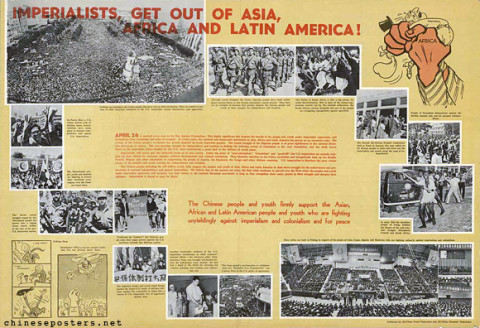
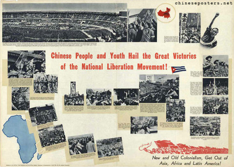

Research
I study twentieth-century relations between China and Latin America.
My work pushes beyond diplomatic history to bring to light the clandestine encounters and collaborations that connected the two regions, and the neglected legacies they left behind.
From the archive

